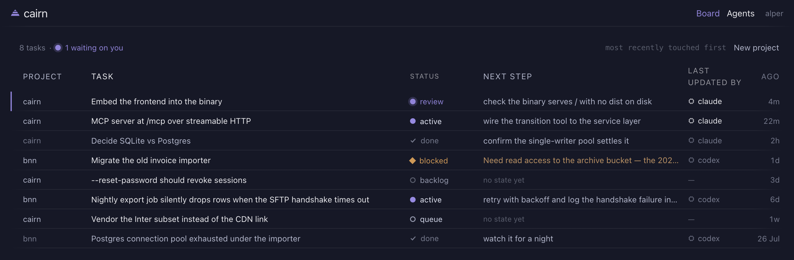
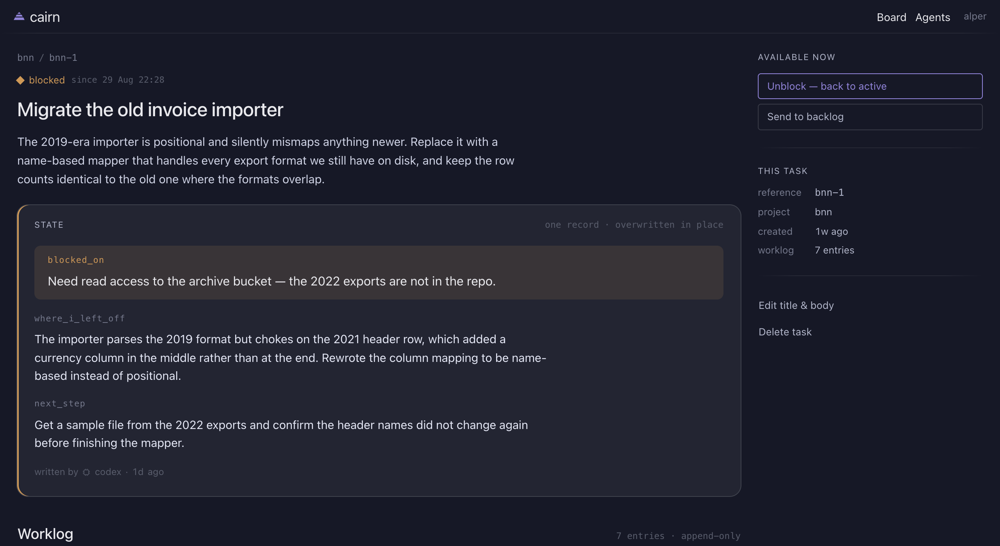

An issue tracker that treats the coding agent as a first-class actor — not as an API bolted onto a tracker designed for people.
A cairn is a stack of stones left on a trail so whoever comes next knows the way. Every task here carries a note for whoever picks it up, human or agent.

Why
Every tracker now has an MCP server. Almost all of them are the same tracker as before with a thin API bolted on the side, so the interesting part — what the agent actually did, what it tried, where it got stuck — ends up as prose in a comment box, if it is recorded at all.
Cairn inverts that. Agent behaviour lives in the schema and in the business rules, and the MCP server is in the same binary as the web interface, calling the same service layer. There is no separate agent API to drift out of sync, and no second permission model to keep honest.
The idea
Confusing them is the failure mode. One is the note on top of the cairn; the other is the trail behind it. The interface gives them opposite geometry so a reader never mistakes one for the other.
one record · overwritten in place
A single summary, always current. Exactly one per task, enforced by the primary key. Write it as though the next reader knows nothing about what you just did — because that is usually true.
where_i_left_off
next_step
blocked_on
append-only · never edited
Every attempt, kept forever, with the status change it accompanied. This is where the dead ends live, so the next agent does not walk down them again.
what_was_tried
outcome
An agent cannot leave a task without writing state. Not a convention or a lint rule: the only function that writes a task's status takes the note as an argument, and status, state and worklog are written in one transaction or not at all. There is no code path that moves a task and forgets.

blocked_on is promoted above everything else,
because on a blocked task it is the only sentence that matters. Below it, the
worklog: every attempt an agent made, including the ones that failed.
The rules
backlog → queue
Only the human decides what gets worked on.
review → done
Only the human decides something is finished.
So an agent that finishes a piece of work moves it to review and says what you should check. A task sitting in review is always waiting on you — which is why the board marks those rows and counts them, without needing a filter.
What an agent sees when it tries anyway
only the human marks work done; leave the task in review, and make sure state.next_step says what they should check
Refusals are written to be acted on. An agent reads an error the way a person reads documentation, so every one of them says what happened, why, and what to do instead. Every task read also returns the moves that actor may legally make from where the task is now — so a well-behaved agent never has to guess.
Running it
The Vue frontend is compiled into the Go binary. SQLite is a pure-Go port, so
there is no libc to link and the Docker image is built FROM scratch
— 17 MB, no base image, no shell.
# build it make build # run it ./cairn # then open http://127.0.0.1:7777 and pick a username
Register the agent in the web interface, copy the token, and point your
client at /mcp. It speaks MCP over streamable HTTP in the same
process that serves the browser.
claude mcp add --scope user \
--transport http cairn \
http://127.0.0.1:7777/mcp \
--header "Authorization: Bearer cairn_…"
board, list_projects, list_tasks,
get_task, create_task,
transition_task, write_state,
append_worklog.
The rules arrive as server instructions on connect, so an agent knows what it may and may not do before it makes a single call.
Scope
Cairn is for one person and their agents. There is nobody to notify, nobody to assign to, and nobody to share with — so none of that exists, and none of it is coming. This list is closed, not a roadmap:
Gantt · calendar view · saved views · due dates · reminders · recurring tasks · labels · priorities · estimates · sprints · milestones · attachments · comments · subtasks · dependencies · CalDAV · SMTP · notifications · mobile apps · teams, roles, invitations, sharing
What you get instead is a tracker small enough to read end to end, that keeps one promise properly: whoever picks a task up next — you tomorrow, or an agent in five minutes — finds a note saying where the work stands.